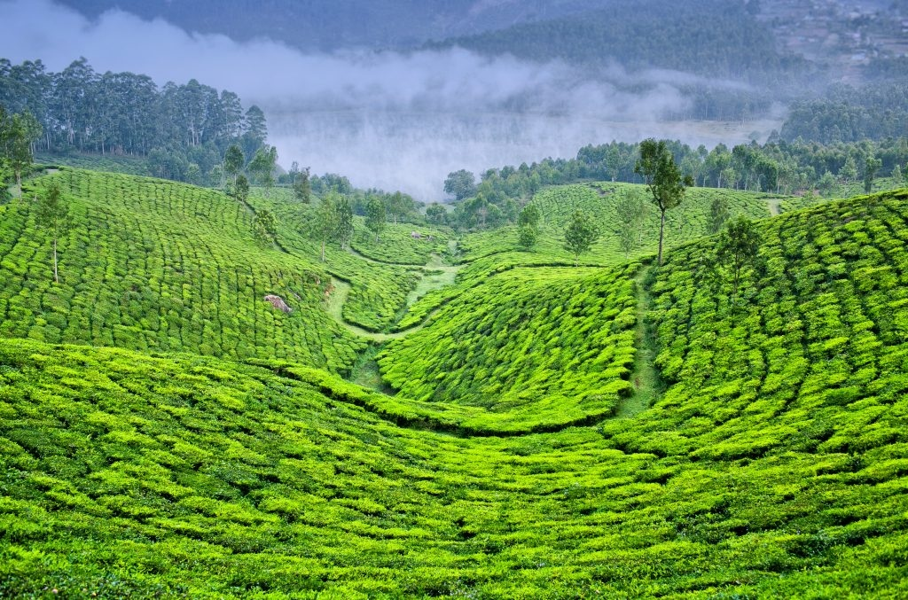
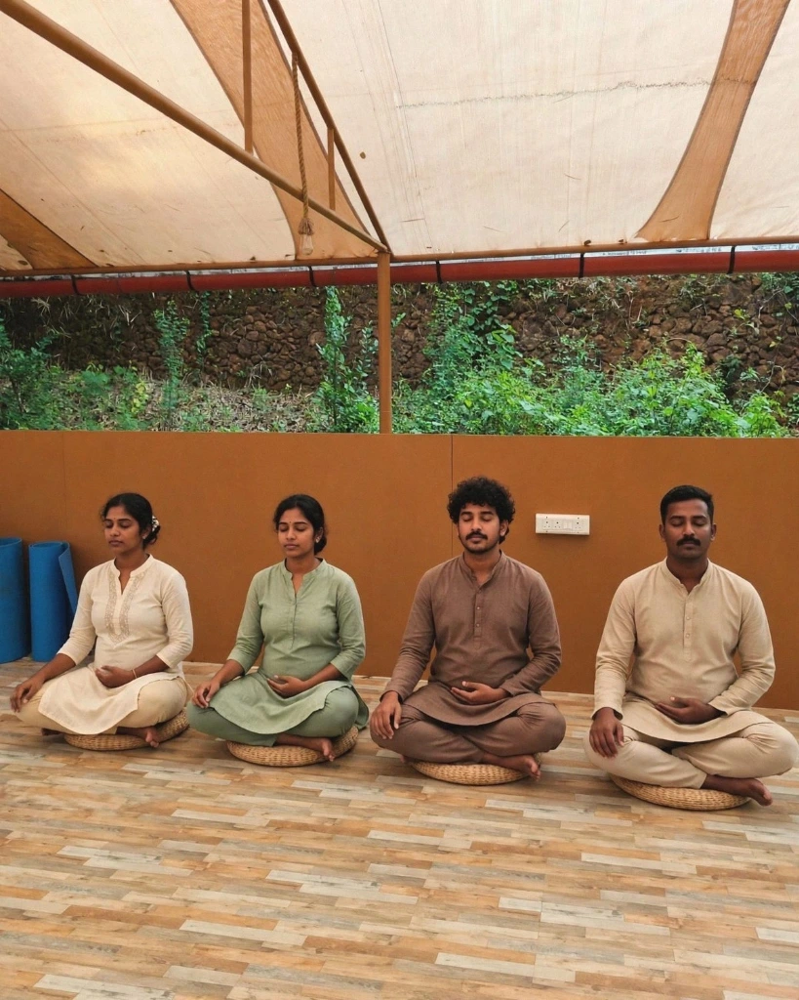

The Wisdom of the Sacred Bilva Tree: Balancing Sharira, Manas & Atman
The Wisdom of the Sacred Bilva Tree: Balancing Sharira, Manas & Atman.
The Bilva leaf has three joined parts. They stand for body, mind, and soul. When you care for all three, you feel peaceful, steady, and whole.

Finding Silence in the Mist: Healing Digital Fatigue in Wayanad
Finding Silence in the Mist: Healing Digital Fatigue in Wayanad.
Daily screens and rush make us tired. A calm retreat in Wayanad helps you slow down. Walk on green trails and breathe clean forest air.

The Power of Gentle Breathing: Why Slow Pranayama Calms the Modern Heart
The Power of Gentle Breathing: Why Slow Pranayama Calms the Modern Heart.
You do not need hard poses to practice yoga. Slow, steady breathing calms the heart. Practice simple morning breath to feel fresh all day.
Morning at Tirunelli: Ancient Stone Pillars and Sacred Mountain Streams
Morning at Tirunelli: Ancient Stone Pillars and Sacred Mountain Streams.
Ancient Tirunelli Temple rests beneath green hills. Clean mountain streams flow past old stone pillars. Walking here at dawn brings quiet joy.

The Sattvic Kitchen: Nourishing the Body with Fresh Local Kerala Produce
The Sattvic Kitchen: Nourishing the Body with Fresh Local Kerala Produce.
Good food brings clear thoughts and easy digestion. We cook fresh vegetarian meals with local farm produce and mild spices. Every meal feels light.

Yoga Nidra: The Art of Conscious Deep Sleep for Physical Regeneration
Yoga Nidra: The Art of Conscious Deep Sleep for Physical Regeneration.
Yoga Nidra is guided deep rest. You lie down in comfort and relax from head to toe. Thirty minutes of quiet rest renews your mind and body.
Forest Bathing in the Western Ghats: Why Tree Canopies Heal Our Senses
Forest Bathing in the Western Ghats: Why Tree Canopies Heal Our Senses.
Walking under tall trees brings deep calm. Listen to birds and the wind in the bamboo. Spending quiet time in nature lowers stress naturally.